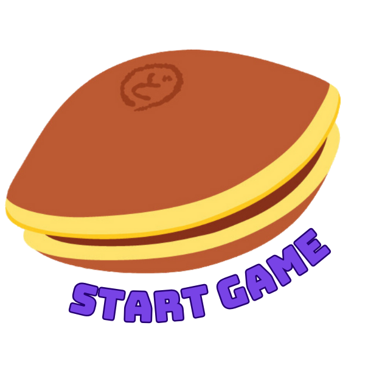
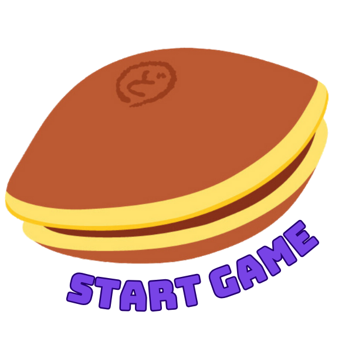
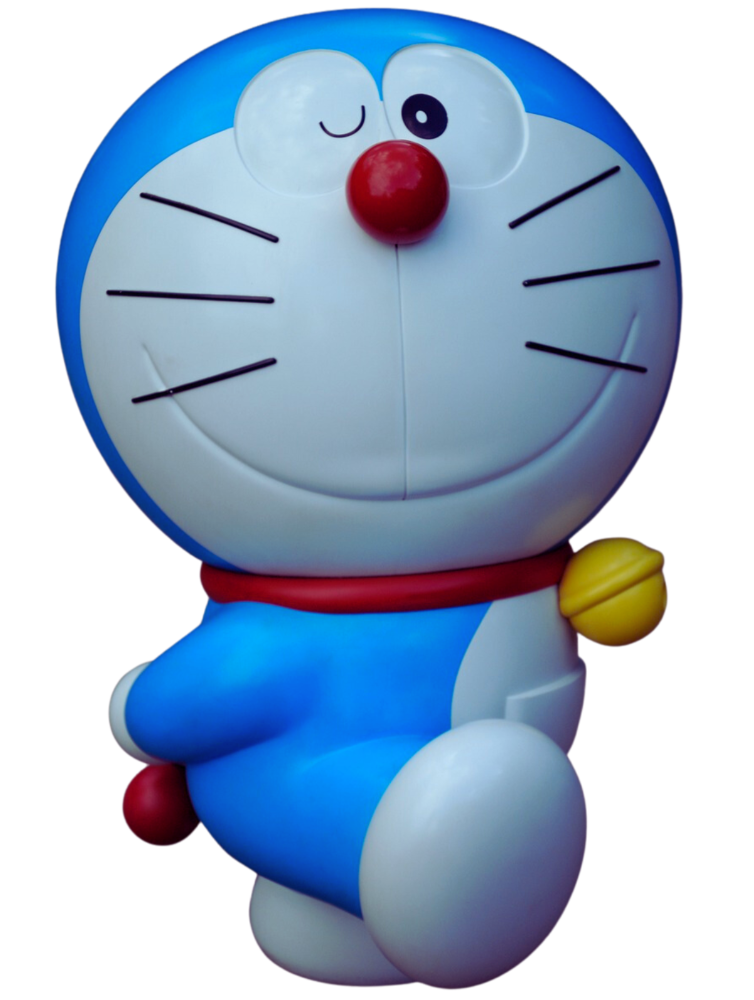
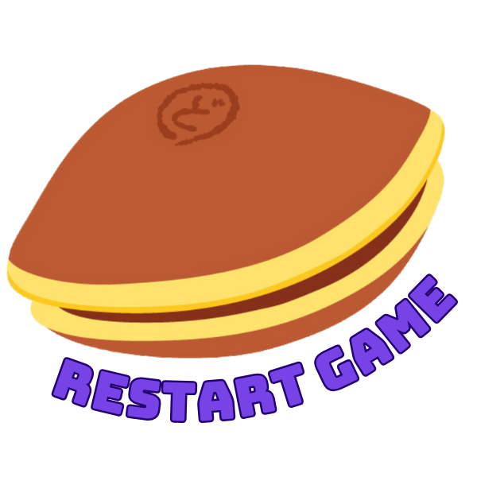

Instructions

Press the left and right keys to move Doraemon. Collect all the dorayaki!
Hint: Be careful of the archenemy or you'll lose!

Instructions
Press the left and right keys to move Doraemon. Collect all the dorayaki!
Hint: Be careful of the archenemy or you'll lose!
Your Points: 0
GAME OVER
Your Points: 0
BEST SCORE: 0
Press Restart Game for more DORAYAKI FUN!
